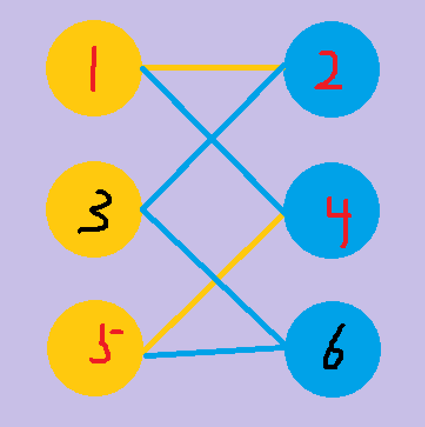
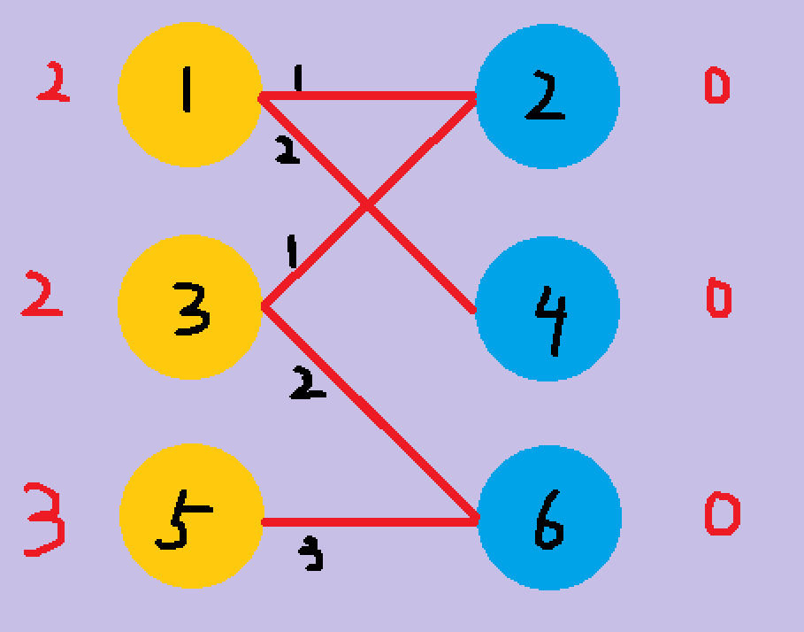

KM算法理解及python实现
KM算法是用于寻找带权二分图最佳匹配的算法,首先,KM算法是完备匹配算法,即二分图数目较少的一边所有点都要求在另一边有对应不重复匹配点；其次,对于所有匹配方式,要求对应边的权值最大。
该算法难点在于对增广路的理解,以下图例子说明:

黄色边和红字圆代表已匹配,蓝色边和黑字圆表示未匹配,那么我们增广路就是找两个未匹配的圆即两个黑字圆,使他们之间的路径为蓝黄相间即可,例如6-5-4-1-2-3,当然6-3也是一种特殊情况。在找到一条增广路后,将路径上边的颜色互换,新的黄色边会比原黄色边多1,这样我们就多匹配了一条边。
增广路能帮助我们解决完备匹配问题,那剩下的仅有权值问题了。同样以图说明:

首先对每个需要匹配的黄色圆,我们给他们附上他们所连接边的最大权值,可以理解为他们的预期,而右侧蓝色圆则预期都为0,人数多没有发言权,优先满足人数少的一边。我们从左侧圆开始遍历找左右侧预期和等于对应权值边,若对面圆未匹配,则匹配成功。因此,对1得1-4,匹配成功；同样对2得3-6；然而当为5进行匹配时,对面的6已经被3匹配,这时我们就会让不是主角的一方退让,3会找自身又没有另一条同样符合条件的边,我们得到的结果是没有,发生冲突。此时为了解决冲突,所有参与方都要做出调整,对于左侧,他们本来预期高,因此要进行下调,而右侧感到有人抢他,所以上调身价。这个下调和上调的值就是能让冲突解决的值,这里就是能让3-2匹配3下降的值2,这样356圆预期变为012,继续对3进行匹配。
若3只有一条边即为完备匹配！代码如下：
import numpy as np
class KM_match(object):
def __init__(self,match_data):
#待匹配数据,邻接矩阵存储 num_left <= num_right
self.match_data = match_data
self.num_left = len(self.match_data)
self.num_right = len(self.match_data[0])
#左右侧最大期望
self.left_max = np.array([max(x) for x in self.match_data])
self.right_max = np.zeros(self.num_right)
#标记是否被访问过
self.visit_left = [False] * self.num_left
self.visit_right = [False] * self.num_right
#记录匹配信息
self.match = np.empty(self.num_right) * np.nan
#便于记录下调和上调的最小值
self.slack = np.ones(self.num_right) * np.inf
def dfs(self,left):
self.visit_left[left] = True
for right in range(self.num_right):
if(self.visit_right[right]):
continue
gap = self.left_max[left] + self.right_max[right] - self.match_data[left][right]
if(gap == 0):
self.visit_right[right] = True
if(np.isnan(self.match[right]) or self.dfs(int(self.match[right]))):
self.match[right] = left
return True
else:
self.slack[right] = min(self.slack[right],gap)
return False
def KM(self):
for left in range(self.num_left):
for i in range(len(self.slack)):
self.slack[i] = np.inf
#完备匹配,匹配不出来别想继续
while(True):
for i in range(len(self.visit_left)):
self.visit_left[i] = False
for i in range(len(self.visit_right)):
self.visit_right[i] = False
if(self.dfs(left)):
#未冲突匹配成功
break
#冲突,上调或下调预期值
d = np.inf
for right in range(self.num_right):
if not self.visit_right[right]:
d = min(d,self.slack[right])
for i in range(self.num_left):
if self.visit_left[i]:
self.left_max[i] -= d
for j in range(self.num_right):
if self.visit_right[j]:
self.right_max[j] += d
else:
self.slack[j] -= d以上未KM算法的dfs实现但实际复杂度为O(n4),在数据过大极易超时,下面是KM算法的O(n3) bfs实现。
import numpy as np
class km_match():
def __init__(self):
pass
def init_data(self,match_data):
self.match_data = match_data
self.num_left = len(self.match_data)
self.num_right = len(self.match_data[0])
#左右侧最大期望
self.lx = np.zeros(self.num_left)
self.ly = np.zeros(self.num_right)
#标记是否被访问过
self.visit_right = [False] * self.num_right
#记录匹配信息
self.linky = np.zeros(self.num_right)
#便于记录下调和上调的最小值
self.slack = np.zeros(self.num_right)
def bfs(self,k):
px = 0
py = 0
yy = 0
pre = np.zeros(self.num_right)
for i in range(1,self.num_right):
self.slack[i] = np.inf
self.linky[py] = k
while True:
d = np.inf
px = int(self.linky[py])
self.visit_right[py] = True
for i in range(1,self.num_right):
if not self.visit_right[i]:
if self.slack[i] > (self.lx[px] + self.ly[i] - self.match_data[px][i]):
self.slack[i] = (self.lx[px] + self.ly[i] - self.match_data[px][i])
pre[i] = py
if(self.slack[i] < d):
d = self.slack[i]
yy = i
for i in range(self.num_right):
if self.visit_right[i]:
self.lx[int(self.linky[i])] -= d
self.ly[i] += d
else:
self.slack[i] -= d
py=yy
if self.linky[py] == -1:
break
while(py != 0):
self.linky[py] = self.linky[int(pre[py])]
py = int(pre[py])
def KM(self):
self.lx = np.zeros(self.num_left)
self.ly = np.zeros(self.num_right)
self.linky = np.ones(self.num_right)*(-1)
for i in range(1,self.num_right):
self.visit_right = [False] * self.num_right
self.bfs(i)